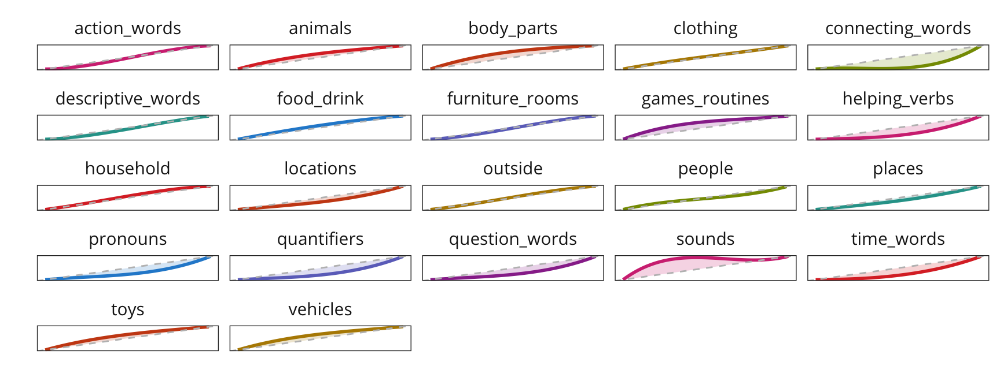

6 Categorical Composition: Semantics
The same analyses as in the previous chapter could be done with CDI categories, which are semantic rather than lexical.
6.1 Data Prep
What are the most common categories?

Seems reasonable to take high-freuqency and
We limit our analysis to traditional WS and WG forms for now because short forms like the British English TEDS don’t have category information. The sample sizes included in this analysis are given below.
6.2 Illustrating the Approach
English data alone.

Function for resampling data and computing area estimate for each sample.
Resample data and find the mean and CI of the area estimate.
6.3 Across languages

 ## Dimensionality Reduction Approach
## Dimensionality Reduction Approach
6.3.1 WS Production Nouns
Scree plot, indicating that PC1 dominates (for nouns, at least).

| Comp.1 | Comp.2 | Comp.3 | Comp.4 | Comp.5 | Comp.6 | Comp.7 | Comp.8 | Comp.9 | Comp.10 | Comp.11 | Comp.12 | |
|---|---|---|---|---|---|---|---|---|---|---|---|---|
| outside | -0.07 | -0.14 | -0.28 | -0.21 | 0.46 | -0.04 | 0.62 | -0.25 | 0.00 | 0.44 | 0.02 | 0.00 |
| people | -0.06 | 0.33 | 0.70 | 0.35 | 0.18 | 0.06 | 0.27 | 0.24 | 0.10 | 0.29 | -0.12 | -0.02 |
| furniture_rooms | -0.01 | -0.03 | 0.07 | -0.12 | -0.60 | 0.04 | 0.00 | 0.00 | 0.13 | 0.57 | 0.50 | 0.18 |
| animals | 0.23 | -0.34 | 0.20 | 0.24 | 0.11 | -0.28 | 0.20 | 0.02 | -0.38 | -0.24 | 0.34 | 0.53 |
| clothing | 0.25 | -0.26 | 0.29 | 0.16 | -0.12 | 0.42 | -0.03 | -0.71 | -0.13 | 0.03 | -0.15 | -0.15 |
| household | -0.08 | -0.01 | -0.13 | 0.01 | -0.41 | 0.12 | 0.33 | 0.06 | 0.05 | -0.05 | -0.63 | 0.52 |
| food_drink | 0.01 | -0.07 | -0.08 | 0.04 | -0.32 | 0.13 | 0.36 | 0.33 | -0.61 | -0.03 | 0.00 | -0.50 |
| vehicles | 0.41 | -0.55 | 0.02 | -0.09 | 0.19 | 0.27 | -0.21 | 0.49 | 0.13 | 0.27 | -0.19 | 0.01 |
| toys | 0.09 | -0.19 | -0.18 | 0.52 | -0.15 | -0.64 | -0.10 | -0.10 | 0.09 | 0.28 | -0.25 | -0.23 |
| games_routines | 0.34 | -0.03 | 0.39 | -0.61 | -0.16 | -0.45 | 0.18 | -0.06 | 0.13 | -0.15 | -0.15 | -0.18 |
| body_parts | 0.15 | -0.15 | -0.11 | 0.27 | -0.13 | 0.16 | 0.42 | 0.07 | 0.62 | -0.39 | 0.27 | -0.20 |
| sounds | 0.75 | 0.56 | -0.29 | 0.09 | 0.03 | 0.06 | 0.03 | -0.02 | -0.08 | 0.09 | 0.02 | 0.10 |